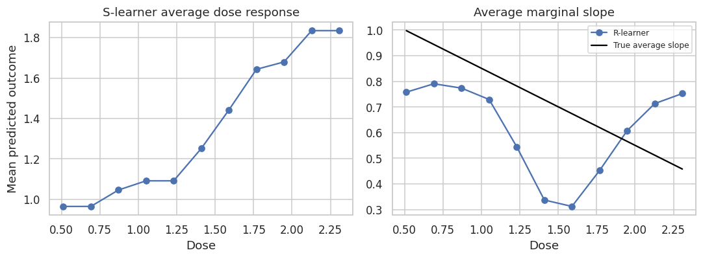
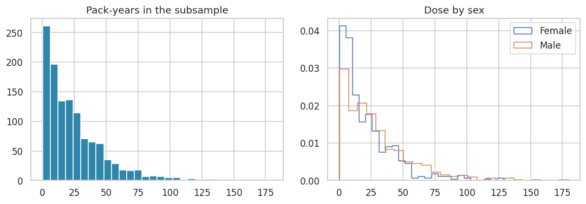
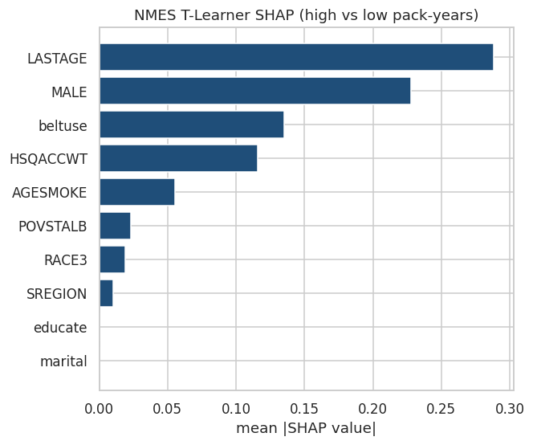
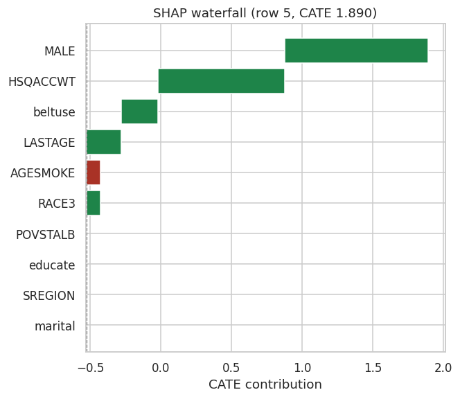

When the treatment variable is continuous — such as a drug dosage, an exposure duration, a price, or a policy intensity — the binary and multi-arm frameworks of the preceding sections no longer apply directly. There is no finite set of contrasts to estimate, and the treatment effect cannot be summarized as a difference between two discrete potential outcomes. Instead, the quantity of interest is a dose-response function that describes how the expected outcome, and its rate of change, varies jointly with the treatment level \(d\) and the covariate vector \(x\).
Estimands
Two complementary estimands are commonly targeted in the continuous treatment setting.
The Conditional Average Dose Response (CADR) function characterizes the full outcome surface as a function of dose:
\[\mu(d, x) = \mathbb{E}[Y(d) \mid X = x]\]
and the treatment effect at dose level \(d\) relative to a reference dose \(d_0\) (often zero or the observed minimum) is:
This is the natural generalization of the binary CATE: rather than a single scalar effect per unit, we obtain a curve — one contrast value for each point on a pre-specified dose grid \(\mathcal{D} = \{d_1, d_2, \dots, d_m\}\).
The Marginal Structural Derivative (or dose-response slope) targets the local rate of change in the outcome with respect to the treatment:
\[\tau'(d, x) = \frac{\partial}{\partial d} \mathbb{E}[Y(d) \mid X = x]\]
This is useful when the practitioner is interested in marginal effects — whether increasing the dose slightly from its current level improves or worsens outcomes — rather than in cumulative contrasts against a baseline. In practice, \(\tau'(d, x)\) is often approximated by finite differences on the estimated CADR surface.
Both estimands require identification via a generalized unconfoundedness assumption:
\[Y(d) \perp D \mid X \quad \text{for all } d \in \mathcal{D}\]
along with a positivity (or overlap) condition requiring that the generalized propensity score \(f(d \mid x)\) — the conditional density of treatment given covariates — is bounded away from zero across the support of \(D\):
\[f(d \mid x) > 0 \quad \text{for all } (d, x) \text{ in the support}\]
Violations of positivity are more likely and harder to detect in the continuous setting, since the support of \(D\) is infinite-dimensional relative to any finite sample. Overlap diagnostics should therefore be conducted carefully, for example by inspecting the distribution of the generalized propensity score across subgroups.
The Generalized Propensity Score
In the binary setting, the propensity score \(e(x) = P(T=1 \mid X=x)\) is a scalar probability. For continuous treatments, it is replaced by the generalized propensity score (GPS):
\[r(d, x) = f_{D \mid X}(d \mid x)\]
the conditional density of receiving dose \(d\) given covariates \(x\). The GPS plays the same role as the binary propensity score in balancing covariate distributions and enabling doubly robust estimation, but its estimation is substantially more demanding. Common approaches include:
Parametric GPS: Assume \(D \mid X \sim \mathcal{N}(\hat{m}(x), \hat{\sigma}^2)\) where \(\hat{m}(x)\) is a regression of \(D\) on \(X\). The GPS is then evaluated as the normal density at the observed dose.
Nonparametric GPS: Use kernel density estimation or normalizing flows conditioned on \(X\) to estimate \(f(d \mid x)\) without distributional assumptions.
Residual-based GPS: In the R-Learner, the GPS enters implicitly through the treatment residual \(D - \hat{m}(X)\), avoiding the need to estimate the full conditional density.
Misspecification of the GPS can introduce substantial bias into propensity-weighted and doubly robust estimators, and this risk is heightened in the continuous case relative to binary treatments.
Adapting Meta-Learner Variants to Continuous Treatments
S-Learner
The S-Learner fits a single outcome model \(\hat{\mu}(x, d)\) on the full sample, treating the continuous dose \(D\) as an additional continuous feature alongside \(X\):
The dose-response curve is recovered by evaluating \(\hat{\mu}(x, \cdot)\) on the dose grid \(\mathcal{D}\) at any covariate value of interest. This is the most straightforward extension and imposes no particular structure on the dose-response shape, relying entirely on the base learner to capture the joint \((X, D)\) surface. Flexible base learners such as gradient boosting or neural networks can represent nonlinear and non-monotone dose-response relationships naturally. The key limitation is the same as in the binary case: if the base learner imposes strong smoothness or regularization in the \(D\) direction, the estimated dose-response curve may be overly flat and fail to capture meaningful heterogeneity.
T-Learner
The T-Learner generalizes to the continuous setting by discretizing the dose into \(m\) bins or grid points \(\{d_1, \dots, d_m\}\) and fitting a separate outcome model \(\hat{\mu}_j(x)\) for each bin \(j\):
where \(\hat{\mu}_0(x)\) corresponds to the reference dose bin. This approach is intuitive but has significant practical drawbacks. The choice of binning scheme is arbitrary and can meaningfully affect results. Fine grids produce sparse bins, each with few observations, leading to high-variance arm-specific models — essentially the same sparsity problem that affects multi-arm T-Learners, but now potentially at much larger scale. For this reason, the T-Learner is generally the least preferred meta-learner for continuous treatments unless the dose variable is naturally near-discrete in its distribution.
X-Learner
The X-Learner can be adapted to continuous treatments by applying the cross-fitting logic locally on the dose grid: for each grid point \(d_j\), units near \(d_j\) and units at the reference dose \(d_0\) are selected, and the binary X-Learner pipeline is run on this local subsample using an arm-specific propensity model. The resulting local estimates are then assembled into a dose-response curve. This approach inherits the X-Learner’s efficiency advantages under imbalance — which is common in continuous treatment settings where the dose distribution may be concentrated in certain regions — but introduces sensitivity to the bandwidth or neighborhood definition used to select units near each grid point.
R-Learner
The R-Learner is particularly well-suited to the continuous treatment setting and is the method implemented in r_learner_continuous() in PyCausalML. It extends Robinson’s (1988) partial linear residualization to the continuous case by orthogonalizing both the outcome and the treatment against their respective conditional expectations:
Estimate nuisance functions:
\(\hat{m}(x) = \mathbb{E}[D \mid X = x]\) (dose regression on covariates)
\(\hat{\mu}(x) = \mathbb{E}[Y \mid X = x]\) (outcome regression on covariates, marginalizing over dose)
The orthogonalization ensures that errors in the nuisance estimates \(\hat{m}(x)\) and \(\hat{\mu}(x)\) enter the CATE estimation problem only at second order, providing robustness to moderate nuisance misspecification. Under regularity conditions, the R-Learner achieves near-oracle convergence rates for \(\tau(d, x)\) (Nie & Wager, 2021). In r_learner_continuous(), the final step is implemented by evaluating the fitted \(\hat{\tau}(\cdot, x)\) on the dose grid \(\mathcal{D}\), yielding a discretized dose-response curve for each unit or covariate profile.
DR-Learner
The DR-Learner generalizes to continuous treatments by constructing doubly robust pseudo-outcomes using the generalized propensity score. For a contrast at dose level \(d\) versus reference \(d_0\), the AIPW-style pseudo-outcome for unit \(i\) is:
where \(r(d, x) = f(d \mid x)\) is the generalized propensity score and the indicator \(\mathbf{1}[D_i \approx d]\) selects units with doses in a neighborhood of \(d\). Regressing \(\hat{\phi}_i(d)\) on \(X_i\) for each grid point \(d \in \mathcal{D}\) yields the DR-Learner dose-response estimate. The doubly robust property holds pointwise on the grid: at each dose level \(d\), the estimate is consistent if either the outcome model \(\hat{\mu}(d, x)\) or the GPS \(r(d, x)\) is correctly specified. However, the localization step introduces a bandwidth choice, and the pseudo-outcome construction is sensitive to extreme GPS values — a risk that is heightened in the continuous setting because near-zero densities can occur in any region of the dose support.
Single-Vector Summaries with treatment_type = "continuous"
In many applied settings, the practitioner does not need the full dose-response curve. Instead, a single-vector CATE summary — one scalar effect estimate per unit — is sufficient, typically representing the effect of moving from the observed dose to a target dose, or the local slope of the dose-response at the observed dose. The meta-learners in PyCausalML with treatment_type = "continuous" are designed for this use case. Rather than evaluating \(\hat{\tau}(d, x)\) on a full grid, they return:
\[\hat{\tau}_i = \hat{\tau}(D_i^*, X_i)\]
where \(D_i^*\) is a user-specified target dose (e.g., the population mean dose, the maximum tolerated dose, or a policy-relevant threshold). This produces a unit-level treatment effect vector of the same form as in the binary CATE setting, enabling the same downstream analyses — effect heterogeneity visualization, policy targeting, subgroup discovery — without committing to a full dose-response curve estimation.
Practical Considerations
Continuous treatment settings require additional care relative to binary and multi-arm settings along several dimensions:
Dose grid selection: The resolution of \(\mathcal{D}\) involves a bias-variance tradeoff. Fine grids yield smoother curves but thinner local samples; coarser grids are more stable but may obscure nonlinearities. Adaptive grids based on the observed dose distribution are often preferable to uniform spacing.
GPS estimation quality: The generalized propensity score is harder to estimate well than a binary propensity score, and GPS misspecification propagates into weighted and doubly robust estimators. Residual diagnostics — checking whether \(\tilde{D}_i = D_i - \hat{m}(X_i)\) is approximately uncorrelated with \(X_i\) after adjustment — are a useful sanity check.
Extrapolation risk: Unlike binary treatments where predictions are made at \(W \in \{0, 1\}\), continuous treatment estimators must extrapolate \(\hat{\mu}(d, x)\) to dose values not observed near a given covariate profile. This is particularly problematic at the tails of the dose distribution and in regions of thin overlap.
Monotonicity and shape constraints: When domain knowledge supports a monotone or concave dose-response relationship, incorporating shape constraints into the base learner can substantially reduce estimation variance at the cost of flexibility.
fit(X, treatment, y) returns the fitted estimator. predict returns a NumPy array of conditional average treatment effects. A fitted model also exposes explain and plot_shap.
Install the package from this repository, with the plotting and boosting extras.
Code
import subprocessimport sysfrom pathlib import Pathdef _repo_root() -> Path: here = Path.cwd().resolve()for cand in [here, *here.parents]:if (cand /"pyproject.toml").is_file() and (cand /"src"/"pycausalml").is_dir():return candraiseFileNotFoundError("PyCausalML repository was not found. Run this notebook from the repository." )root = _repo_root()try:import pycausalml # noqa: F401import causaldata # noqa: F401import matplotlib # noqa: F401import xgboost # noqa: F401exceptImportError: subprocess.check_call([ sys.executable, "-m", "pip", "install", "-q", "-e", f"{root}[plot,boost,shap]","statsmodels", "causaldata", ])print("PyCausalML ready.")
PyCausalML ready.
Part A: Meta-learners with synthetic data
We simulate a continuous treatment and a smooth dose–response surface so we can compare estimates to a known benchmark.
Estimand: Conditional Average Dose Response (CADR)
For continuous treatment \(D\) (e.g., dosage), we estimate:
\[\tau(d, x) = \frac{\partial}{\partial d} \mathbb{E}[Y(d) \mid X = x]\]
This is the marginal effect of an infinitesimal dose increase at level \(d\) for units with covariates \(x\).
Generalized R-Learner for Continuous Treatments
Extends Robinson transformation to continuous treatments using kernel smoothing. The implementation lives in PyCausalML as r_learner_continuous() (cross-fitted learner="rf" nuisances and local weighted lm, with cross-fitted gradient-boosting nuisances and a local weighted slope):
Average Dose-Response Curve
Code
from sklearn.ensemble import GradientBoostingRegressormu = GradientBoostingRegressor(n_estimators=N_EST, max_depth=2, random_state=0)mu.fit(np.column_stack([X, dose]), y)level = [float(mu.predict(np.column_stack([X, np.full(len(X), d)])).mean()) for d in grid]m_y = np.zeros(len(y))m_d = np.zeros(len(y))rng_fold = np.random.default_rng(0)fold = rng_fold.integers(0, 2, size=len(y))for k in (0, 1): tr, te = fold != k, fold == k fy = GradientBoostingRegressor(n_estimators=N_EST, max_depth=2, random_state=0).fit(X[tr], y[tr]) fd = GradientBoostingRegressor(n_estimators=N_EST, max_depth=2, random_state=1).fit(X[tr], dose[tr]) m_y[te] = fy.predict(X[te]) m_d[te] = fd.predict(X[te])y_res, d_res = y - m_y, dose - m_dbw =1.06* np.std(dose) *len(dose) ** (-0.2)def local_slope(mask=None): dd = dose if mask isNoneelse dose[mask] yr = y_res if mask isNoneelse y_res[mask] dr = d_res if mask isNoneelse d_res[mask] out = []for g in grid: wt = np.exp(-0.5* ((dd - g) / bw) **2) out.append(float(np.sum(wt * dr * yr) / np.sum(wt * dr **2)))return np.asarray(out)slope_hat = local_slope()fig, axes = plt.subplots(1, 2, figsize=(10, 3.8))axes[0].plot(grid, level, marker="o")axes[0].set_title("S-learner average dose response")axes[0].set_xlabel("Dose")axes[0].set_ylabel("Mean predicted outcome")axes[1].plot(grid, slope_hat, marker="o", label="R-learner")axes[1].plot(grid, [((1.15-0.30* g) * modifier).mean() for g in grid], color="black", label="True average slope")axes[1].set_title("Average marginal slope")axes[1].set_xlabel("Dose")axes[1].legend(fontsize=8)fig.tight_layout()plt.show()

Heterogeneous Dose-Response: Effect Modification
Visualize how dose-response varies by key covariate (X1):
Native S/T/X/R/DR with a continuous dose (synthetic)
PyCausalML now accepts continuoustreatment for SLearner, TLearner, XLearner, RLearner, and DRLearner via a continuous dose. This is not the same object as r_learner_continuous() (which returns a dose grid\(\times\) units surface for CADR): here you get a single\(\hat{\tau}(X)\) vector per specification (e.g., S-learner contrast \(\mu(X,d_1)-\mu(X,d_0)\) at training quartiles of \(D\); T/X high-vs-low dose at the median; R-learner Robinson partial effect; DR continuous pseudo-outcome). The chunk below is a minimal sanity check on the same simulated data as above.
Code
d0, d1 = np.quantile(dose, [0.25, 0.75])s_mu = GradientBoostingRegressor(n_estimators=N_EST, max_depth=2, random_state=2)s_mu.fit(np.column_stack([X, dose]), y)s_contrast = s_mu.predict(np.column_stack([X, np.full(len(X), d1)])) - s_mu.predict(np.column_stack([X, np.full(len(X), d0)]))high = (dose > np.median(dose)).astype(int)native_rows = [{"learner": "S contrast (q75-q25)", "mean": float(s_contrast.mean())}]for label, cls in (("T median split", TLearner), ("X median split", XLearner), ("DR median split", DRLearner)): model = cls(learner="gbr", n_estimators=N_EST, random_state=2) model.fit(X, high, y, feature_names=names) native_rows.append({"learner": label, "mean": float(np.mean(model.predict(X)))})plr = PartiallyLinearDML(discrete_treatment=False, model_y="gbr", n_estimators=N_EST, random_state=2)plr.fit(X, dose, y, feature_names=names)native_rows.append({"learner": "Partially linear DML slope", "mean": float(plr.effect())})print(pd.DataFrame(native_rows).round(3).to_string(index=False))print("True mean slope", round(float(true_slope.mean()), 3))
learner mean
S contrast (q75-q25) 0.597
T median split 0.849
X median split 0.695
DR median split 0.720
Partially linear DML slope 0.699
True mean slope 0.683
Diagnostics & Validation Protocol
Diagnostics help ensure that dose-response estimates are not driven by lack of overlap, covariate imbalance, or miscalibration. Below we implement overlap checks, balance assessment before/after weighting, and a CATE calibration plot.
Overlap Diagnostics
For continuous treatments, overlap means that the conditional support of \(D\) given \(X\) has sufficient density across the dose range we care about. We check the marginal distribution of \(D\) and the distribution of the conditional expectation \(E[D|X]\) (estimated via a regression of \(D\) on \(X\)) to assess common support.
Interpretation: substantial overlap across covariate strata (e.g., E[D|X] distributions by X1 quartile) supports estimation of dose-response over the observed dose range; narrow or separated supports suggest limited overlap and cautious interpretation.
Balance Assessment (Before/After Weighting)
We stratify units by dose quartiles and assess standardized mean differences (SMD) of covariates across strata. We then compute stabilized inverse probability of treatment weights (IPTW) for continuous \(D\) using a normal approximation: \(w_i = f(D_i) / f(D_i|X_i)\), with \(f(D|X)\) from \(D|X \sim N(\hat{e}(X), \hat{\sigma}^2)\), and reassess balance after weighting.
CATE Calibration Plot
We bin units by their predicted marginal effect at a reference dose (median dose) and plot mean predicted effect vs. mean observed outcome (residualized by baseline) in each bin. A well-calibrated estimator should show a positive alignment between predicted effect and realized outcomes.
For continuous treatments, the choice of approach depends on data structure and goals:
Criterion
Recommendation
Target
Full curve \(\tau(d,x)\) on a grid → r_learner_continuous(). Single-vector heterogeneous “effects” with continuous \(D\) in PyCausalML → SLearner / TLearner / XLearner / RLearner / DRLearner with treatment_type = "continuous" (see help text for each estimand).
Overlap
Ensure sufficient density of \(D\) across \(X\); trim or restrict to common support if needed.
Curvature
If effect is linear in \(d\) → local linear R-Learner or parametric DR model; if nonlinear → kernel smoothing, splines, or generalized random forests.
Bandwidth
Use cross-validation to choose bandwidth for kernel weights; Silverman-type rules are a starting point.
Alternatives
Generalized random forests (generalized random forests) for continuous treatment; double ML with series expansion in \(d\); causal BART with continuous treatment.
Use the R-Learner when you want a debiased, flexible estimator that leverages ML for nuisances and residualization; use GRF or BART when you prefer a single forest that directly targets the dose-response.
Part B: Use case — NMES (nmes_data from this tutorial (data/nmes_data.csv))
nmes_data comes from the 1987 National Medical Expenditure Survey (NMES) and is bundled in this tutorial (data/nmes_data.csv) (data/nmes_data.csv). It is widely used for continuous treatment / dose-response methods (e.g., Imai & van Dyk, 2004). The extract has 9,708 observations and 12 variables (complete cases in the packaged version).
Role
Variable
Description
Outcome
TOTALEXP
Total annual medical expenditures (USD)
Treatment
packyears
Pack-years: (cigarettes per day / 20) × years smoked
Covariates
AGESMOKE
Age when started smoking
LASTAGE
Age at last interview
MALE
Sex (indicator)
RACE3
Race (coded)
educate
Education
marital
Marital status
SREGION
Census region
POVSTALB
Poverty status
beltuse
Seat belt use
HSQACCWT
Sampling weight (include as covariate here for simplicity; full survey inference would use design-based weights)
Inference is only as credible as unconfoundedness and overlap over the support of packyears.
Explore treatment and outcome
Prepare analysis data and fit generalized R-learner
We map TOTALEXP\(\to\)Y, packyears\(\to\)D, and use the covariates above. The dose grid spans the 5th–95th percentiles of packyears to limit extrapolation.
Code
def tutorial_file(name: str): here = Path.cwd().resolve()for cand in [here, *here.parents]: path = cand /"Tutorials"/"05_02_Meta_Learners"/"data"/ nameif path.is_file():return pathraiseFileNotFoundError(name)nmes = pd.read_csv(tutorial_file("nmes_data.csv"))print(nmes.shape)print(nmes[["packyears", "TOTALEXP"]].describe().round(2))fig, axes = plt.subplots(1, 2, figsize=(10, 3.6))axes[0].hist(nmes["packyears"], bins=30, color="#2E86AB")axes[0].set_title("Pack-years")axes[1].hist(np.log1p(nmes["TOTALEXP"]), bins=30, color="#1F4E79")axes[1].set_title("log(1 + total expenditure)")fig.tight_layout()plt.show()rng = np.random.default_rng(4)take = rng.choice(len(nmes), size=1200, replace=False)sub = nmes.iloc[take].reset_index(drop=True)covars = [c for c in sub.columns if c notin ("TOTALEXP", "packyears")]Xn = sub[covars].to_numpy(dtype=float)dn = sub["packyears"].to_numpy(dtype=float)yn = np.log1p(sub["TOTALEXP"].to_numpy(dtype=float))nmes_names = covarsgrid_n = np.linspace(np.quantile(dn, 0.05), np.quantile(dn, 0.95), 9)mu_n = GradientBoostingRegressor(n_estimators=N_EST, max_depth=2, random_state=4)mu_n.fit(np.column_stack([Xn, dn]), yn)level_n = [float(mu_n.predict(np.column_stack([Xn, np.full(len(Xn), d)])).mean()) for d in grid_n]print("NMES subsample", len(sub), "covariates", covars)
(9708, 12)
packyears TOTALEXP
count 9708.00 9708.00
mean 24.48 2042.01
std 24.30 6410.79
min 0.05 0.00
25% 6.60 90.00
50% 17.25 406.09
75% 34.50 1350.33
max 216.00 175095.97
We plot the marginal distribution ofpackyears and the distribution of \(\hat{E}[D \mid X]\) (random forest) by sex, as a simple overlap diagnostic.
Code
fig, axes = plt.subplots(1, 2, figsize=(10, 3.6))axes[0].hist(dn, bins=30, color="#2E86AB")axes[0].set_title("Pack-years in the subsample")male = sub["MALE"].to_numpy()axes[1].hist(dn[male ==0], bins=25, density=True, histtype="step", label="Female")axes[1].hist(dn[male ==1], bins=25, density=True, histtype="step", label="Male")axes[1].set_title("Dose by sex")axes[1].legend()fig.tight_layout()plt.show()

Meta-learners on NMES: continuous packyears and binary median split
For compute time when rendering, we fit meta-learners on a random subsample of up to 3,000 rows (the r_learner_continuous() fit above still uses all complete cases).
1. Native continuous treatment. Pass packyears as treatment with treatment_type = "continuous". S-Learner contrasts predicted outcome at the 25th vs. 75th percentile of training \(D\) (override with dose_values = c(d0, d1)). T- / X-Learner use the sample median of \(D\) as high-vs-low split (override with dose_split). R-Learner uses Robinson-style\(\mathbb{E}[Y|X]\) and \(\mathbb{E}[D|X]\) nuisances. DR-Learner uses a continuous cross-fitted pseudo-outcome (see package documentation). Covariates exclude raw packyears so dose enters only through treatment.
2. Binary median split. For a classic ATE of high vs. low exposure and for SHAP below, we also fit binary learners on
We still do not put raw packyears in \(X\) when using \(W\) (overlap).
Code
high = (dn > np.median(dn)).astype(int)rows = []stored = {}for label, cls in (("S", SLearner), ("T", TLearner), ("X", XLearner), ("R", RLearner), ("DR", DRLearner)): model = cls(learner="gbr", n_estimators=N_EST, random_state=4) model.fit(Xn, high, yn, feature_names=nmes_names) stored[label] = model rows.append({"learner": f"{label} high vs low pack-years", "mean_cate": float(np.mean(model.predict(Xn)))})plr_n = PartiallyLinearDML(discrete_treatment=False, model_y="gbr", n_estimators=N_EST, random_state=4)plr_n.fit(Xn, dn, yn, feature_names=nmes_names)rows.append({"learner": "Partially linear DML (per pack-year)", "mean_cate": float(plr_n.effect())})print(pd.DataFrame(rows).round(3).to_string(index=False))
learner mean_cate
S high vs low pack-years 0.000
T high vs low pack-years 0.040
X high vs low pack-years -0.042
R high vs low pack-years -0.110
DR high vs low pack-years -0.069
Partially linear DML (per pack-year) 0.000
The mean predicted column averages \(\hat{\tau}(X)\) from predict(); ate_plugin uses estimate_ate()’s internal variance formulas (continuous rows use high-vs-low-\(D\) logic where applicable). Interpret S as a dose contrast at training quartiles, T/X as above-median vs. below, R as a Robinson-type effect, and DR as the continuous DR CATE surface aggregated to a mean—comparability across columns is limited.
Use case: Double machine learning on NMES (DML)
We reuse the same subsample (X_meta, d_meta = packyears, y_meta = TOTALEXP) and fit partially linear DML with random forests nuisances: LinearDML (OLS final stage on residual interactions), SparseLinearDML (Lasso final stage), and CausalForestDML (a causal forest on residuals). All three target \(\hat{\theta}(X)\) in \(\tilde{Y} \approx \tilde{D}\cdot\theta(X)\) with continuous \(\tilde{D}\) (see pycausalml.double_machine_learning). There is no ground-truth CATE on NMES, so we compare (i)ATE with a large-sample normal CI, (ii)holdout RMSE of the cross-fitted \(\hat{\mathbb{E}}[Y\mid X]\) on a 30% test split (models refit on 70% train only), and (iii)Spearman correlation between predicted \(\hat{\theta}(X)\) on the full subsample (agreement of rankings across methods).
learner ate se
LinearDML 0.005 0.004
SparseLinearDML 0.005 0.004
CausalForestDML (median split) -0.182 0.177
Spearman correlation of predicted effects
linear sparse forest
linear 1.000 0.995 0.410
sparse 0.995 1.000 0.406
forest 0.410 0.406 1.000
Interpretation:ATE rows aggregate \(\hat{\theta}(X)\); intervals use the notebook’s default large-sample standard error for the mean CATE (not debiased DML inference). RMSE_EY_holdout measures how well the cross-fitted outcome nuisance predicts \(Y\) out of sample—higher overlap and smoother \(\mathbb{E}[Y\mid X]\) often yield lower RMSE. Spearman shows whether heterogeneity rankings agree across linear, sparse, and forest final stages.
SHAP for predicted CATE (DML, NMES)
As in § NMES SHAP for meta-learners, we attribute predicted\(\hat{\theta}(X)\) (not necessarily causal structure) using explain_cate(..., use_permshap = TRUE) and the PyCausalML SHAP plots, on the full-subsample DML fits above.
SHAP interpretability for predicted CATE (NMES)
SHAP attributes predicted\(\hat{\tau}(X)\) to covariates. We use explain_cate() with use_permshap = TRUE, smaller explain/background samples, and relaxed max_iter / tol so the document renders in reasonable time. The X-Learner is fit without a fixed propensity vector so predict() evaluates learned \(e(X)\) on any newdata, as required when permutation SHAP perturbs features.
We run SHAP for S-, T-, X-, and R-learners only: DR-learner predictions require multiple cross-fitted surfaces per call, so permutation SHAP at this sample size is prohibitively slow; the DR row remains in the binary ATE table above. (You can run explain_cate() on tl_nmes_c or other continuous fits similarly if needed; we keep SHAP on binary fits here for cost and a single estimand.)
SHAP beeswarm and waterfall for the T-Learner surrogate
Code
exp_t.plot_importance(title="NMES T-Learner SHAP (high vs low pack-years)")plt.show()exp_t.plot_waterfall(row=int(np.argmax(np.abs(exp_t.predictions))))plt.show()


Summary and Conclusions
This notebook demonstrated meta-learners for continuous treatments (Part A: synthetic \(D\) with known CADR; Part B: NMES nmes_data with TOTALEXP, packyears, and covariates from this tutorial (data/nmes_data.csv)). Key takeaways:
CADR: For continuous treatment \(D\), a natural target is \(\tau(d,x) = \frac{\partial}{\partial d}\mathbb{E}[Y(d)|X=x]\), the marginal effect of dose at \(d\) given \(x\), estimated on a dose grid by r_learner_continuous().
Native continuous meta-learners: SLearner, TLearner, XLearner, RLearner, and DRLearner accept treatment_type = "continuous" and numeric treatment (e.g. packyears); estimands differ (quartile contrast, median split, Robinson, continuous DR, etc.—see Details in each function’s documentation).
R-Learner for continuous (grid): Cross-fit outcome and treatment (E[D|X]) models, form residuals, then use local linear regression with kernel weights over a dose grid to estimate \(\tau(d,x)\) (or population averages).
Bandwidth: Silverman-type rule used here; in practice choose via cross-validation. Local linear regression reduces boundary bias vs. kernel averaging.
Heterogeneity: Stratifying by covariates (e.g., X1) shows how dose-response differs across subgroups; the R-Learner output can be used for subgroup-specific curves.
SHAP: Because r_learner_continuous() returns a dose \(\times\) unit surface, we explain variation in\(\hat{\tau}(d_{\mathrm{ref}}, x)\) across units by permutation SHAP on a ranger surrogate of those slopes at a fixed reference dose. Interpret as attribution for model-estimated heterogeneity, not as causal Shapley effects for the true DGP.
Diagnostics: Overlap (distribution of \(D\) and \(E[D|X]\)), balance (SMD before/after stabilized IPTW), and CATE calibration (predicted vs residualized outcome by quintile) support the validity of dose-response estimates.
Decision framework: Use the R-Learner for debiased, flexible dose-response estimation; consider GRF or causal BART when a single forest or Bayesian approach is preferred. Always check overlap and balance.
NMES (Part B): Continuous r_learner_continuous() curve for packyears; S/T/X/R/DR with treatment_type = "continuous" on raw packyears (native API); binary median-split S/T/X/R/DR for discrete ATE and SHAP; LinearDML / SparseLinearDML / CausalForestDML on the same subsample with ATE, holdout RMSE for \(\hat{\mathbb{E}}[Y\mid X]\), Spearman agreement of predicted CATE, and permutation SHAP for \(\hat{\theta}(X)\); learner="rf" in nuisances where used. Interpret under unconfoundedness; use survey weights properly in real reporting.
For a full dose–response surface on a grid, use r_learner_continuous() or methods such as GRF. For a single vector of heterogeneous effects with continuous \(D\), use treatment_type = "continuous" on the standard meta-learners and read each learner’s estimand in the package help. Validate bandwidth and overlap in \(D\) given \(X\); use SHAP on an explicit target (here, surrogate predictions at \(d_{\mathrm{ref}}\) or binary \(\hat{\tau}(X)\)) when reporting interpretability.
References
Nie & Wager (2021). Biometrika: Quasi-oracle estimation (R-Learner theory)
Kennedy et al. (2017). JASA: Nonparametric causal effects of continuous treatments
Athey & Wager (2019). arXiv: Generalized random forests
Chernozhukov et al. (2018). Econometrica: Double/debiased ML
Imai, K., & van Dyk, D. A. (2004). Causal inference with general treatment regimes. Journal of the American Statistical Association, 99(467), 854–866. (NMES / continuous treatment)